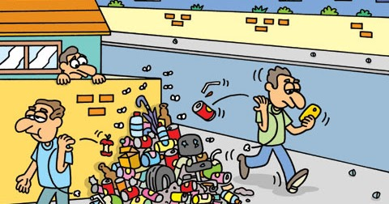

Todos nós enquanto cidadãos com certeza já descartamos lixo em lugares inapropriados, ou nos omitimos vendo o lixo ser descartado. No dia a dia isso pode parecer insignificante, porém, essas ações podem trazer consequências terríveis para a comunidade, mesmo que não nos afete, afeta alguém.
Essas ações podem ser basicamente duas, são elas:
Deixando um pouco mais claro, o "jogar qualquer tipo de lixo em espaços públicos" pode ser:
Dito isso, vamos as consequências.
Agora que falamos das ações, vamos falar das consequências que elas causam. Dentre as pricipais, temos: